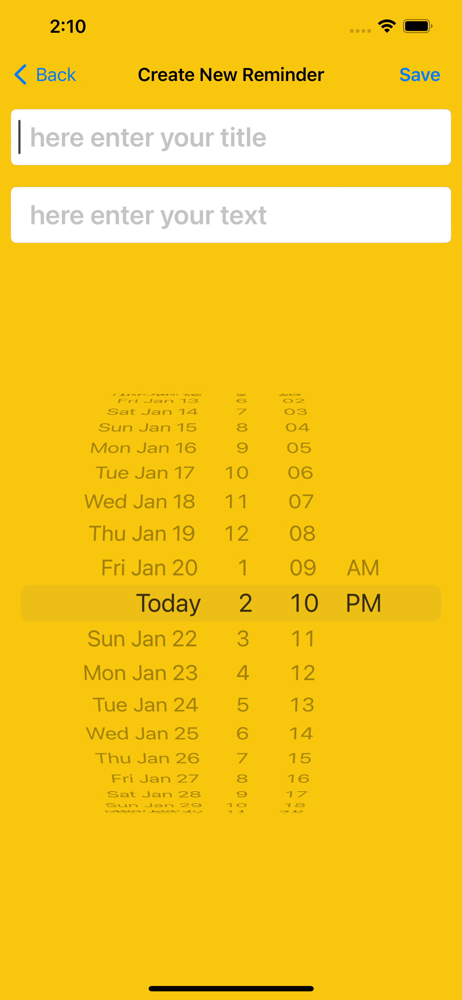

In this following table we showcase the user guide information

The image above shows the main frame or the screen when the application is open for the first time.
If the user click on the 'notify' button at the left top corner then the user will be prompted with the notification asking the user if to 'allow' the notifications being sent to the user's phone or 'not allow' these notification being set.
Next image screen showcases a selection of date including the day of the week, the name of the month, the time of the day for a specific reminder. The 'AM' or 'PM' is also provided for the user to select if the Reminder takes place during the day, or during the night. Once the selected date is chosen, the user can then save the Reminder to the list which is in the final screen or frame of this application.
An example of this step can be seen in the following image:
Let's not forget that before the new Reminder is saved, the option that is provided for the user is also the descriptive text which allows the user to not only define what type of Reminder that is, but most importantly provide any additional notes and text pertaining to this Reminder
You can see this option in the example right bellow.


This is what the final screen or frame of the application looks like. It features the full list of all the reminders that were saved previously in the application. Also, with this design, it's easy to navigate and click on any available reminder located under the main label: 'Your Reminders'.
| Indicated Option (A) | Indicated Option (B) | Indicated Option (C) |
|---|---|---|
| Notify: click on this button to send alert and notification to your phone as a user. | + : add new reminders by clicking on the plus sign. | List of Reminders: will show up under the ‘Your Reminders’ label. |
| Controls | Operating System | Sensors | |||||||||||||||||||||||||||
|---|---|---|---|---|---|---|---|---|---|---|---|---|---|---|---|---|---|---|---|---|---|---|---|---|---|---|---|---|---|
| Swipe up/down to touch the icon on the screen to add reminder or notify the user of the changes. | Home button to close the application. | Create new reminder - click on the plus sign in the right top corner | Utilize iPhone keyboard to enter text into the input box | iOS Apple Macbook/iPhone | iPhone 13 Pro | iPhone 13 Pro Max | iPhone 13 mini | iPhone 13 | iPhone SE (3rd generation) | iPhone 12 Pro | iPhone 12 Pro Max | iPhone 12 mini | iPhone 12 | iPhone 11 Pro | iPhone 11 Pro Max | iPhone 11 | MacBook Air (Retina, 13‑inch, 2020) | MacBook Air (Retina, 13-inch, 2018 - 2019) | MacBook Air (13-inch, Early 2015 - 2017) | MacBook Air (11-inch, Early 2015) | MacBook Pro (13-inch, M2, 2022) | MacBook Pro (13-inch, M1, 2020) | MacBook Pro (13-inch, 2020) | MacBook Pro (13-inch, 2016 - 2019) | MacBook Pro (Retina, 13-inch, Late 2012 - 2015) | MacBook Pro (14-inch, 2021) | MacBook Pro (16-inch, 2021) | MacBook Pro (16-inch, 2019) | Touch control feature to open and navigate through the application |
If you have any questions or concerns you can send an email to this address: